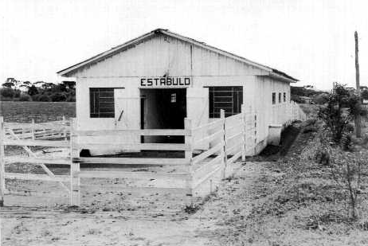
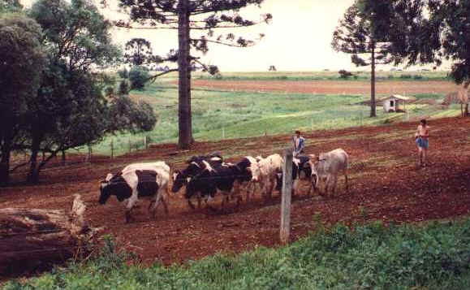
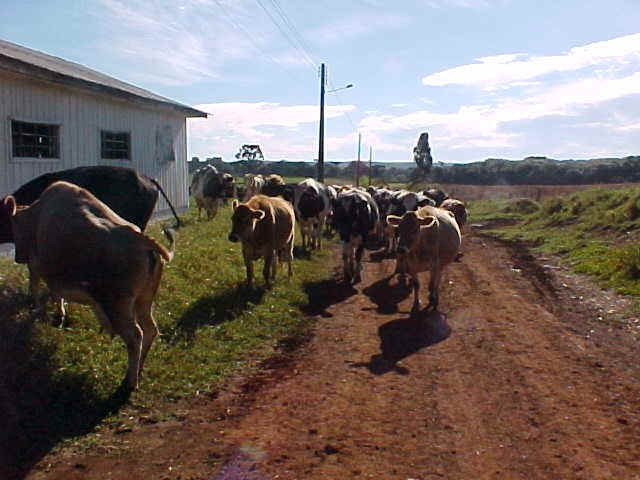
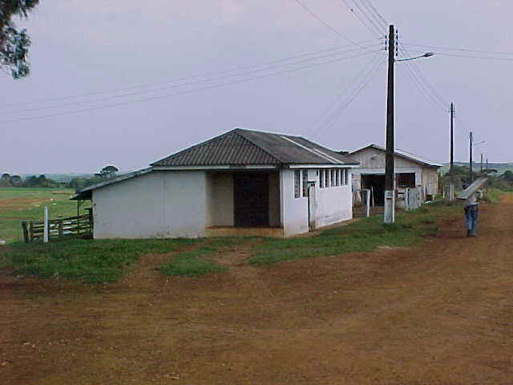
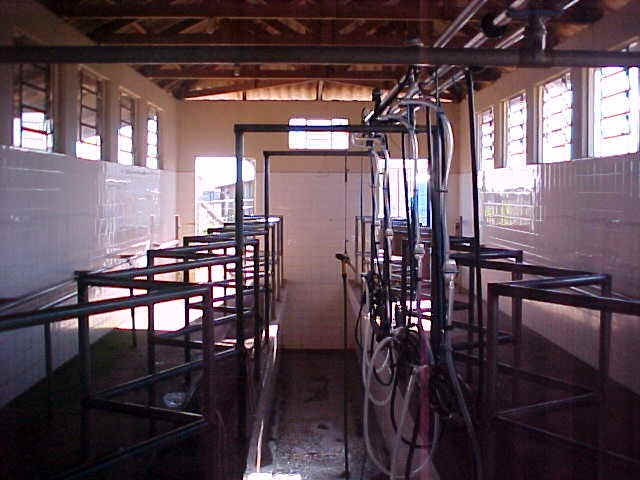
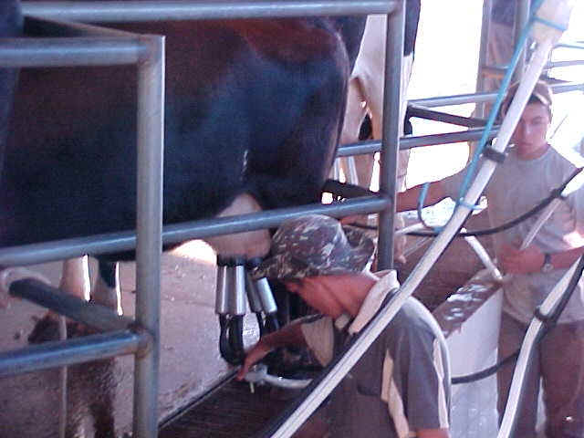
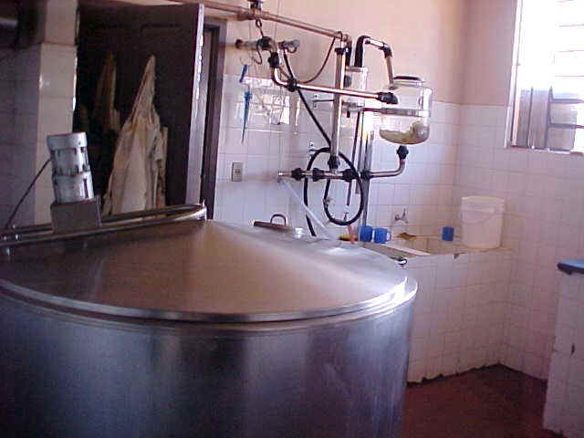
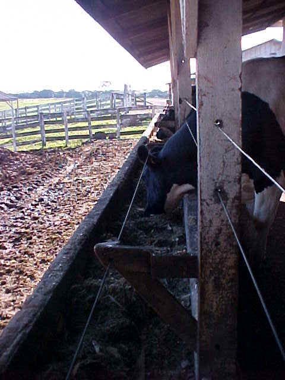

Bovinocultura

O setor de bovinos do Colégio destina-se exclusivamente à produção leiteira, são criados animais das raças Holandesa e Jersey. A ordenha é mecanizada, o leite é conduzido através de tubulação até o resfriador.
O rebanho leiteiro é composto por um total de 45 animais entre vacas, novilhas e bezerros.
São produzidos em média 300 litros de leite por dia, destinados ao consumo dos alunos e o excedente à venda para a Cooperativa de produtores de leite, antiga COAMIG.

Estábulo em 1957

1992

animais das raças Jersey e Holandesa - 2003

Sala de Ordenha e Estábulo antigo - 2003

Sala de Ordenha - 2003

Ordenha

Sala do resfriador

Complementação alimentar pós-ordenha